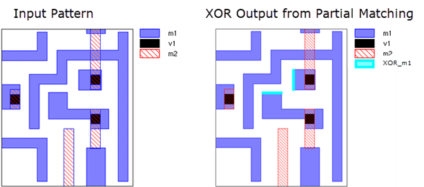

Partial matching can be used to debug a
pattern that does not match where it is expected to match. Partial
matching requires a pattern library compiled with appropriate options.
Partial matching is specified with CMACRO options in the rule file.
The output of a partial matching run is the per-layer XOR difference
between the pattern layers and the design layers in the layout regions
that meet the partial matching criteria.
Note: Partial matching is only intended for debugging a small
area of the layout. It is not a substitute for pattern matching
with appropriately defined pattern constraints. In particular, partial matching
may not find all locations of a partial match if a suitable partial
match candidate is not identified.
Prerequisites
A pattern
library, and knowledge of the name of the pattern to debug.
Partial matching only applies to exact TEM patterns. For grid-based
puzzle matching, the patterns must be Manhattan shapes only.
Note: The examples in this procedure assume the library name
is “library” and the pattern to debug is “pattern1”. The pattern
has three layers: M1, V1, and M2.
Procedure
- Compile
the pattern library into a DMACRO.
Compile options are used to do the following:
Add matched
layer marker output for each pattern layer.
Enable runtime
CMACRO options.
(Optional)
Output a count marker.
The following command is used for this example:
pdl_lib_mgr compile input library.pmdb output lib_pat1.svrf
marker matched_m1 matched layer M1
marker matched_v1 matched layer V1
marker matched_m2 matched layer M2
enable_runtime_options
gen_count_layer > compile.log
If you want debug only one pattern in a library, you can use
the option “patterns pattern_name”
in the compile command.
For this example, the compiled DMACRO includes these lines:
DMACRO pm:library in_M1 in_V1 in_M2
options_string
out_matched_m1 out_matched_v1 out_matched_m2 out_match_count
- Determine
which partial matching method to use and which options to specify
in the CMACRO options string.
- Set up
the CMACRO call and the rule checks in the rule file.
Use the CMACRO option string arguments determined in
the previous step, the appropriate input and output arguments for
your pattern, and the compile options used in Step 1. Include rule
checks for each output layer from the partial matching run.
This example is for a multilayer pattern, so the ‑enable_partial_match
option is used. The first two numbers, 1 and 0.9, specify that at
most 1 layer may be below the match tolerance of 0.9. The design
layers v1 and m2 must match exactly, so they are listed with the
req_layer argument.
CMACRO pm:library m1 v1 m2
"-enable_partial_match {1 0.9 req_layer {v1 m2}}"
xor_m1 xor_v1 xor_m2 count_marker
XOR_m1 {COPY xor_m1}
XOR_v1 {COPY xor_v1}
XOR_m2 {COPY xor_m2}
partial_matches {COPY count_marker}
If working with a full chip layout, run partial matching on only
a small portion of the layout where a match was expected but not
found.
- Run Calibre.
calibre -drc -hier rules > log
The output layers from the matched layer markers contains the
XOR difference of the pattern layer and the design layer in the
regions that meet the partial matching criteria.
- View the
results using Calibre RVE.
The XOR layer differences appear in the results and
can be highlighted in the layout.
In this example, the XOR differences for layer m1 are in the
rule check XOR_m1. The rule checks for the layers m2 and v1 (XOR_v1
and XOR_m1) do not have results, as these layers were specified
to match exactly (the req_layer argument in the CMACRO option string).
Figure 1. Partial
Matching